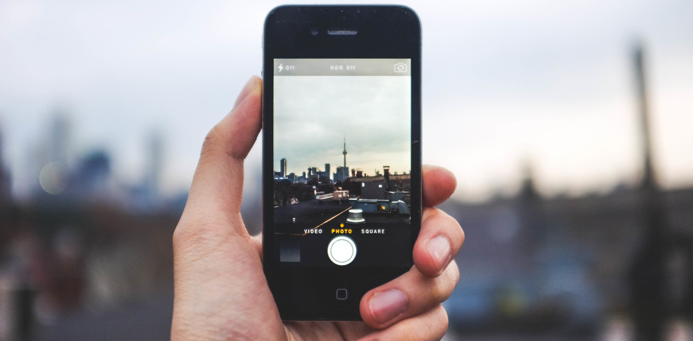

<!--
  Generated template for the StartPage page.

  See http://ionicframework.com/docs/components/#navigation for more info on
  Ionic pages and navigation.
-->
<ion-header>


</ion-header>


<ion-content>
  <ion-slides pager>

    <ion-slide style="background-color:#FFCCBC">
      <div class="slidebg"></div>
   <!--   <ion-avatar>
        
      </ion-avatar> -->

     <h2>Import your videos</h2>
      <p>And be paid for views!</p>
      <button class="ybutton"  ion-button (click)=" goToSlide()">Go on</button>
    </ion-slide>

    <ion-slide  style="background-color:#5C6BC0">
      <h2>Watch best and exciting videos</h2>
      <p>From all around the world</p>
      <button class="ybutton" ion-button (click)=" goToSlide2()">Go on</button>
    </ion-slide>

    <ion-slide style="background-color:#26A69A">
      <h2>Register or login via facebook</h2>
      <p>It's never been that easy</p>
      <button class="ybutton" ion-button (click)=" goToSlide3()">Go on</button>
    </ion-slide>
    <ion-slide style="background-color:#9CCC65">
      <h2>Let's get started!</h2>
      <button ion-button (click)="goToMain()">Pagrindinis</button>

    </ion-slide>

  </ion-slides>
</ion-content>
